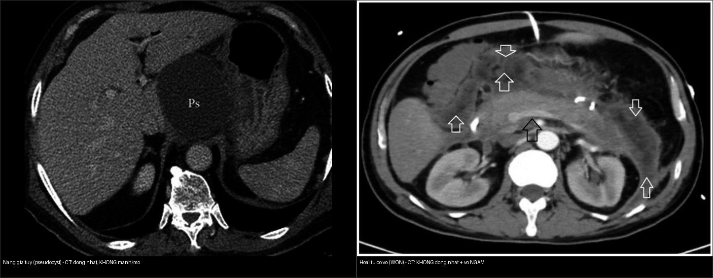
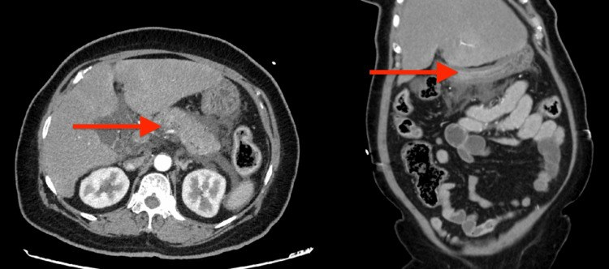
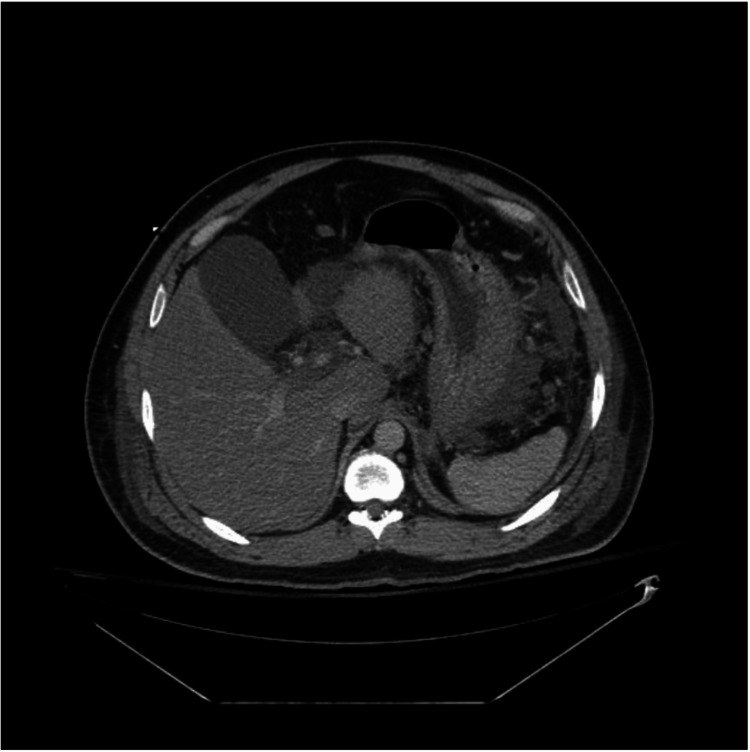
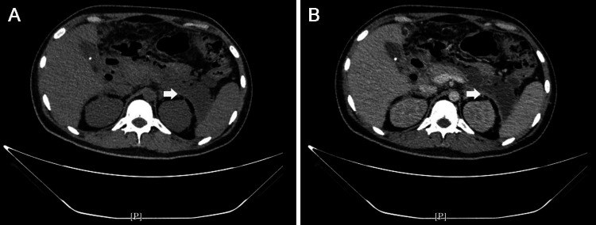
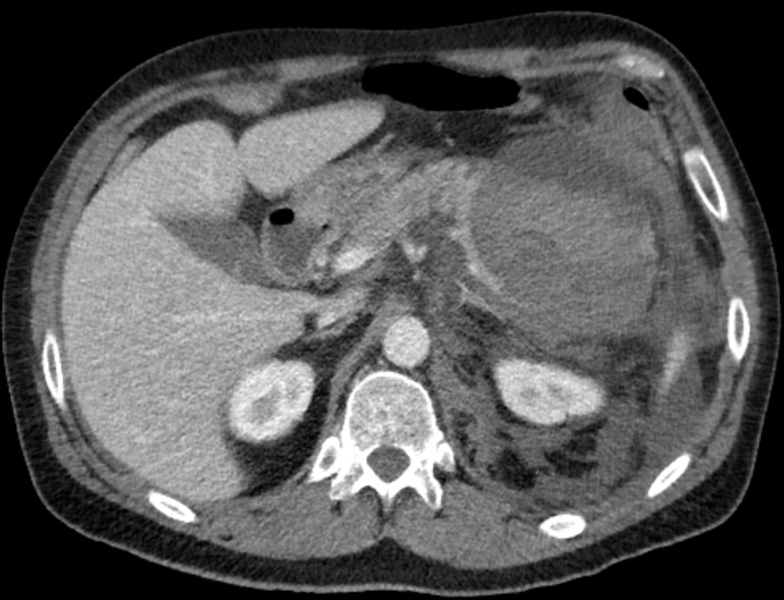

135 — Viêm tụy cấp Atlanta 2012 & Balthazar / Acute pancreatitis
Tags: pattern:viem-tuy vung:tuy score:Atlanta protocol:CT-tuy-da-thi
Mức chắc chắn (certainty): tổng hợp y văn (literature synthesis) — nhóm tự biên từ y văn mở + ca nguyên văn CC BY (Cureus 2026, Front Med 2026, Wikimedia).
1. Tổng quan — men tụy tự tiêu + vì sao phải CHỤP ĐÚNG THỜI ĐIỂM
- Viêm tụy cấp chia 2 thể theo Atlanta 2012: phù nề mô kẽ (interstitial edematous) (không hoại tử, ~80–85%) vs hoại tử (necrotizing) (hoại tử nhu mô ± mỡ quanh tụy).
- TẠI SAO CT phải sau > 72 giờ: sớm (< 24 giờ) co mạch + phù làm mất ranh giới vùng hoại tử → CT giả "bình thường"/"nhẹ", bỏ sót ANC/WON. Sau 72–96 giờ vùng hoại tử hiện rõ thành ổ không ngấm (đậm độ thấp trong nhu mô ngấm).
- Vật lý hình ảnh: CT thì tụy 40–45s + cửa 70s: nhu mô tụy ngấm mạnh, vùng hoại tử KHÔNG ngấm (thiếu mạch) → tương phản đậm độ; dịch/mủ ~0–20 HU, mỡ hoại tử âm (mỡ), máu cấp > 40 HU.
- Ngưỡng tiên lượng định lượng: CRP > 150 mg/L ở 48 giờ và hematocrit > 44% lúc nhập viện gợi viêm tụy nặng; Balthazar CTSI (A–E + % hoại tử: 0% = 0 điểm; < 30% = 2; 30–50% = 4; > 50% = 6) — CTSI ≥ 7 tiên lượng nặng.
- Ngưỡng can thiệp: nhiễm trùng hoại tử (khí trong ổ) → kháng sinh + dẫn lưu tối thiểu; WON vô khuẩn → chờ vỏ chắc (≥ 4 tuần) mới xử trí.
2. Ma trận 4 ổ dịch Atlanta 2012 (4 tuần + hoại tử)
| Ổ dịch | Thời gian | Nền | Đồng nhất? | Vỏ? | Chốt vào (rule-in) | Chốt loại (rule-out) |
|---|---|---|---|---|---|---|
| Tụ dịch cấp quanh tụy (APFC) | < 4 tuần | Phù nề | Đồng nhất (chỉ dịch) | Chưa vỏ | Dịch quanh tụy thuần nhất, không vỏ, < 4 tuần | Không đồng nhất/mảnh mỡ hoại tử trong ổ → ANC |
| Nang giả tụy (Pseudocyst) | ≥ 4 tuần | Phù nề | Đồng nhất (chỉ dịch) | Vỏ xơ rõ, không có biểu mô | Vỏ rõ + dịch thuần nhất + ≥ 4 tuần + KHÔNG mảnh hoại tử | Có mảnh hoại tử/mỡ trong ổ → WON |
| Tụ dịch hoại tử cấp (ANC) | < 4 tuần | Hoại tử | KHÔNG đồng nhất (dịch + mô/mỡ hoại tử) | Chưa vỏ | Ổ không đồng nhất + mảnh mỡ/hoại tử, chưa vỏ, < 4 tuần | Đồng nhất thuần dịch → APFC |
| Hoại tử có vỏ (WON) | ≥ 4 tuần | Hoại tử | KHÔNG đồng nhất | Vỏ dày NGẤM thuốc | Vỏ ngấm + dịch KHÔNG đồng nhất + ≥ 4 tuần | Ống nhỏ dẫn lưu tắc ngay — không điều trị như nang giả |

Trái: nang giả tụy — ổ dịch ĐỒNG NHẤT, thành mỏng, KHÔNG mảnh hoại tử. Phải: WON — ổ KHÔNG đồng nhất (mảnh hoại tử trong ổ), vỏ NGẤM. Nguồn: Pandey 2026 (PMC13266385) + Li 2026 (PMC13333689), CC BY 4.0. Ảnh ghép letterbox.⚠️ Bẫy sống còn: ổ không đồng nhất ở tuần thứ 5 sau hoại tử = WON, KHÔNG phải nang giả — dẫn lưu bằng ống nhỏ tắc ngay, cần lấy mô hoại tử (necrosectomy / step-up approach).
3. Gamut ổ dịch tụy + biến chứng (kèm ảnh)
- Viêm tụy phù nề mô kẽ (interstitial edematous) — APFC:

Tụy phù nề + dịch quanh tụy; nhánh mạch máu nuôi còn bắt thuốc đều. Nguồn: Puri P et al., Cureus 2026, PMC13094300, CC BY 4.0.- Viêm tụy hoại tử (necrotizing) — ANC/WON:

Hoại tử nhu mô đầu–thân–đuôi tụy + ổ dịch quanh tụy dạng thùy, có thể chảy máu khu trú trong thân/đuôi. Nguồn: Gade P et al., Cureus 2026, PMC13142762, CC BY 4.0.- WON nhiễm trùng (khí trong ổ):

Ổ quanh tụy giới hạn rõ, vỏ ngấm + khí bên trong = hoại tử nhiễm trùng → kháng sinh + dẫn lưu tối thiểu. Nguồn: Renaldi K et al., Cureus 2026, PMC13372196, CC BY 4.0.| Biến chứng | Hình ảnh | Xử trí |
|---|---|---|
| Chảy máu nang giả (giả phình ĐM lách/ĐM vị tá tràng) | Máu lan sau phúc mạc + liên quan đuôi tụy/thân | Nút mạch cấp cứu (xem ảnh dưới) — KHÔNG dẫn lưu mù |
| Nhiễm trùng hoại tử | Khí trong ổ ANC/WON + vỏ ngấm + sốt | Kháng sinh + dẫn lưu tối thiểu / necrosectomy |
| Hẹp/tắc ống mật–tá tràng | Giãn đường mật + dày/chít tá tràng | Stent/giải áp |
| Rò tụy (fistula) | Dịch màng phổi/màng tim/ổ bụng nhiều amylase | Dẫn lưu + giảm tiết (octreotide) |

Máu lan sau phúc mạc từ nang giả đuôi tụy. Nguồn: Hellerhoff, Wikimedia Commons, CC BY-SA 3.0.4. Protocol + flowchart
- Siêu âm đầu tay (sỏi mật, giãn đường mật); CT thì tụy 40–45s + cửa 70s sau > 72 giờ khi bệnh nặng/lâm sàng xấu đi; MRCP khi nghi sỏi ống tụy/ống tụy đứt.
- Balthazar CTSI = điểm viêm tụy (A–E) + điểm hoại tử (0/2/4/6); theo dõi biến chứng cục bộ theo Atlanta 2012.
- Ngưỡng xử trí: ổ dịch không đồng nhất + sốt → chọc hút (cấy, tìm nhiễm trùng); APFC/nang giả vô khuẩn < 6 cm → theo dõi (40–50% tan tự nhiên trong 6 tuần); nang giả có triệu chứng ≥ 4–6 tuần → dẫn lưu nội soi/stent; WON vô khuẩn → chờ ≥ 4 tuần rồi step-up (dẫn lưu → necrosectomy).
- Dịch tễ định lượng: nang giả tụy gặp ở 5–16% sau viêm tụy cấp, tới 20–40% ở viêm tụy mạn; dẫn lưu qua da tái phát tới 45,5% → phẫu thuật/nội soi mở thông dạ dày (cystogastrostomy) cho nang trưởng thành có triệu chứng (PMC13266385).
flowchart TD
A[O dich sau viem tuy] --> B{Hoai tu?}
B -->|Khong| C{4 tuan? APFC vs Nang gia}
B -->|Co| D{4 tuan? ANC vs WON}
C -->|Duoi 4 tuan| C1[APFC - theo doi]
C -->|Tu 4 tuan, co vo| C2[Nang gia - dan luu noi soi neu trieu chung]
D -->|Duoi 4 tuan| D1[ANC - khang sinh + theo doi]
D -->|Tu 4 tuan, vo ngam| D2[WON - step-up: dan luu roi necrosectomy]
A --> E{Khi trong o / sot?}
E -->|Co| F[Nhiem trung hoai tu - khang sinh + dan luu toi thieu]
5. Biến thể bình thường và cạm bẫy
- Chụp < 24 giờ bỏ sót hoại tử → chụp lại sau 72 giờ khi bệnh nặng lên.
- WON đọc nhầm nang giả (bẫy trên) — không đồng nhất + vỏ dày ngấm = WON; ống nhỏ tắc ngay.
- Thông ống tụy chính + nang = u nhầy nhú nội ống tụy (IPMN), không phải nang giả (bài 136).
- Nang giả vs WON trên siêu âm/CT đơn thuần: mảnh mỡ/hoại tử trong ổ là điểm phân biệt — siêu âm nội soi (EUS) giúp.
- Phù tụy lan "giả u" đợt cấp: đừng đọc thành khối u — đối chiếu lâm sàng + chụp lại sau điều trị.
- Giả phình mạch (pseudoaneurysm) có thể xuất hiện trong ổ WON/nang giả — luôn tìm mạch/ngấm trước khi can thiệp dẫn lưu (nguy cơ chảy máu chết người).
6. Tự lượng giá — Blind Quiz
Ca 1 — Nữ 52 tuổi, viêm tụy cấp mức độ nặng, CTA bụng ngày 1.
- Hỏi: thể viêm tụy? Có dấu hiệu hoại tử chưa? Nếu ổ dịch này còn nguyên sau 4 tuần và đồng nhất thì gọi là gì?
Bấm để hiện đáp án (findings + chẩn đoán)
- Findings: tụy phù nề lan tỏa + dịch quanh tụy, không có vùng nhu mô không ngấm → viêm tụy phù nề mô kẽ (interstitial edematous).
- Chốt: ổ dịch thuần nhất < 4 tuần = APFC; nếu còn và có vỏ ≥ 4 tuần, đồng nhất → nang giả tụy. Lưu ý: chụp < 72 giờ có thể bỏ sót hoại tử.
- Nguồn: Puri P et al., Cureus 2026, Fig. 1, PMC13094300, CC BY 4.0.
Ca 2 — Nam 40 tuổi, tăng triglyceride máu, CT bụng nhiều ổ dịch quanh tụy.
- Hỏi: đây là thể nào? Hoại tử nằm ở đâu? Nguy cơ nếu ổ này vỏ hóa mà bên trong không đồng nhất?
Bấm để hiện đáp án (findings + chẩn đoán)
- Findings: hoại tử nhu mô đầu–thân–đuôi tụy + ổ dịch quanh tụy dạng thùy, KHÔNG đồng nhất, có vùng chảy máu khu trú thân/đuôi.
- Chẩn đoán: viêm tụy hoại tử cấp (ANC) < 4 tuần. Nếu vỏ hóa ≥ 4 tuần mà vẫn không đồng nhất → WON (không dẫn lưu ống nhỏ).
- Nguồn: Gade P et al., Cureus 2026, Fig. 1, PMC13142762, CC BY 4.0.
Ca 3 — Bệnh nhân nằm viện 4 tuần sau hoại tử, sốt, CT bụng cản quang.
- Hỏi: nang giả hay WON? Dấu hiệu nào chốt nhiễm trùng? Bước xử trí đầu?
Bấm để hiện đáp án (findings + chẩn đoán)
- Findings: ổ quanh tụy giới hạn rõ, vỏ NGẤM + khí bên trong = hoại tử nhiễm trùng (WON nhiễm trùng).
- Chốt: khí trong ổ = nhiễm trùng; không đồng nhất + vỏ ngấm = WON (không phải nang giả). Xử trí: kháng sinh + dẫn lưu tối thiểu, cân nhắc necrosectomy.
- Nguồn: Renaldi K et al., Cureus 2026, Fig. 2, PMC13372196, CC BY 4.0.
Ca 4 — Đối chiếu: bên nào là nang giả, bên nào là WON?
Bấm để hiện đáp án (findings + chẩn đoán)
- Trái — nang giả tụy: ổ dịch đồng nhất, thành mỏng, không mảnh hoại tử → theo dõi/dẫn lưu nội soi khi có triệu chứng.
- Phải — WON: ổ không đồng nhất (mảnh mỡ/hoại tử) + vỏ ngấm → step-up (dẫn lưu rồi necrosectomy), KHÔNG dùng ống nhỏ đơn thuần.
- Nguồn: Pandey 2026 (PMC13266385) + Li 2026 (PMC13333689), CC BY 4.0.
Ca 5 — Nang đuôi tụy + máu lan sau phúc mạc. Đọc CT.
- Hỏi: đồng nhất hay không? Biến chứng gì? Xử trí đầu?
Bấm để hiện đáp án (findings + chẩn đoán)
- Nang giả chảy máu: máu lan sau phúc mạc từ đuôi tụy — nút mạch động mạch lách cấp cứu (không dẫn lưu mù).
- Nguồn: Hellerhoff, Wikimedia Commons, CC BY-SA 3.0.
Ca 6 — Bệnh nhân viêm tụy cấp sau 5 tuần: ổ dịch không đồng nhất, có vỏ dày. (nội dung bảng mục 2)
Bấm để hiện đáp án (findings + chẩn đoán)
- WON: vỏ ngấm + không đồng nhất; ống nhỏ tắc ngay — can thiệp lấy mô hoại tử (step-up/necrosectomy).
- Đối chiếu nếu ổ đồng nhất + vỏ mỏng ≥ 4 tuần → nang giả tụy (dẫn lưu nội soi khi có triệu chứng).
Bài liên quan chéo
- 100 – Tổng quan hệ Bụng
- 110 – Giải phẫu bụng (khoang trước thận)
- 136 – U/nang tụy (IPMN/MCN/SCN)
- 102 – Viêm tụy cấp sau ERCP (PEP, dự phòng & phân độ)
- 140 – Lách & chấn thương tạng đặc (giả phình ĐM lách)
Ảnh
- Tên file:
135_slug_Modality_SourceID.jpg. Nguồn + giấy phép từng ảnh trongimages/CREDITS.md. - Ảnh CC BY 4.0 (PMC13094300/PMC13142762/PMC13266385/PMC13333689/PMC13372196) được phép ghép letterbox; ảnh CC BY-SA 3.0 (Wikimedia Hellerhoff) giữ nguyên bản.
Không dùng để chẩn đoán độc lập khi chưa có người hướng dẫn.